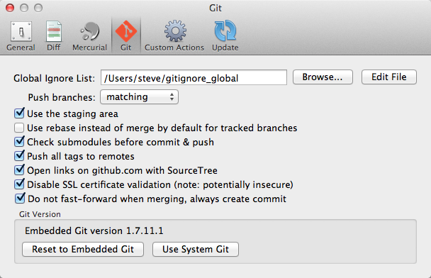

Preferences: Git

Global ignore list - The file containing the global ignore patterns (a default one is set up for you if you didn't have one already)
Push branches - Controls the default branch selection in the overall Push dialog, the options being:
- matching (default) - push all branches which have a matching branch name on the selected remote
- current - push the current branch to a branch of the same name on the remote
- upstream - push the current branch to its tracking branch on the remote
- nothing - push nothing by default
Use the staging area - Whether the file status view should show the Git staging area.
Use rebase instead of merge by default for tracked branches - Usually when you bring in new changes from remotes, you merge them into your local repository. For tracked remotes, you can sometimes get a simpler result by rebasing your local commits instead of creating new merge points. This option controls the use of that by default.
Check submodules before commit & push - whether to check whether there are uncommitted changes in submodules before committing the parent repo, and whether to check if there are unpushed changes in submodules before pushing the parent. When enabled (the default), this can save you from accidentally forgetting to commit & push submodule changes that your parent repository is dependent on. However if the check annoys you, you can disable it here and rely on your own judgement alone.
Push all tags to remotes - when enabled, all tags in the branches that you push are automatically pushed at the same time. If you disable this option, tags will only be pushed when you explicitly do it yourself, e.g. from the sidebar context menu.
Open links on github.com with SourceTree - if enabled, SourceTree will handle the 'Clone in Mac' links on GitHub.com instead of GitHub for Mac.
Disable SSL certificate validation - if checked, SSL certificate errors will not stop you pushing / pulling changes. This can be a quick shortcut for servers using a self-signed SSL certificate, but is insecure; really you should follow these instructions to set up your certificate trust explicitly.
Do not fast-forward on merging - disables fast-forward behaviour when merging, meaning that an explicit merge commit is always created regardless of whether there are other changes in the receiving branch. This can be useful if you want to maintain an explicitly separate line of development in all cases.
Git version - by default the embedded version of Git is used, here you can switch to your system version of Git (and back again).
See also
General Preferences
Diff Preferences
Mercurial Preferences
Custom Actions Preferences
Update Preferences